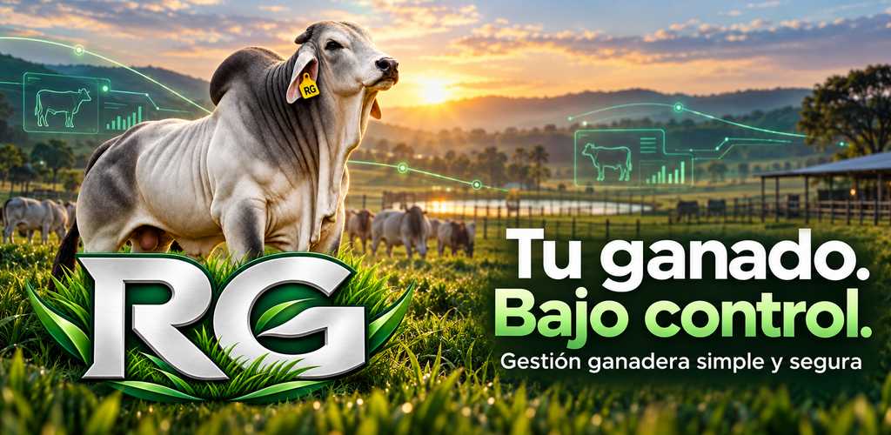

🐄 Animales y nacimientos
Arete, nombre, raza, sexo, estado, fotografías, peso y datos de nacimiento.
- Madre y padre
- Partos y gemelares
- Genealogía visual
Registro diario, sanidad, producción y administración del rancho desde el teléfono, incluso cuando la señal no acompaña.
REGA está pensada para trabajar primero con datos locales y añadir servicios en línea cuando aportan valor: cuenta, sincronización opcional, compras, anuncios y restauración de beneficios.

REGA ha crecido de una ficha de animales a un sistema de trabajo diario, seguimiento y administración.
Arete, nombre, raza, sexo, estado, fotografías, peso y datos de nacimiento.
Vacunación, desparasitación, baños garrapaticidas y tratamientos desde un solo módulo.
Registra pesajes, consulta evolución y conserva el historial del animal.
Registros de mañana, mediodía y tarde, producción de leche y consulta histórica.
Planes de alimentación con cálculos por kilo o saco y apoyo para materia seca/fresca.
Ubica animales, organiza lotes y registra movimientos. Los traslados entre ranchos forman parte de las funciones avanzadas.
Reportes, conteos, exportación a Excel y respaldo portátil .rega, incluyendo información sanitaria.
Historial de cambios y recuperación de registros eliminados para reducir errores accidentales.
Organiza productor, rancho, fierros marcadores y espacios de trabajo separados por cuenta.
Empieza con capacidad para animales y funciones esenciales. La capacidad puede ampliarse gradualmente.
Algunas herramientas y ampliaciones pueden desbloquearse con tokens. Los videos recompensados son voluntarios y tienen límite diario.
Activa las herramientas mientras la suscripción esté vigente y elimina banners publicitarios.
Los registros principales permanecen disponibles sin conexión. Internet se utiliza para servicios externos, anuncios, compras, cuenta y sincronización cuando corresponde.
Cuando se utiliza una cuenta REGA, cada usuario trabaja en un espacio local aislado. La sincronización y restauración de beneficios se asocian a la cuenta correspondiente.
REGA diferencia claramente entre borrar los datos de trabajo y eliminar la cuenta. La eliminación de cuenta requiere reautenticación y ofrece una decisión explícita sobre los datos locales.
Puedes generar respaldos y exportaciones para conservar o mover información sin depender exclusivamente de un servicio en la nube.
La versión disponible en los canales de prueba continúa recibiendo correcciones de lógica, seguridad, traducciones, rendimiento y experiencia de uso antes del lanzamiento general.